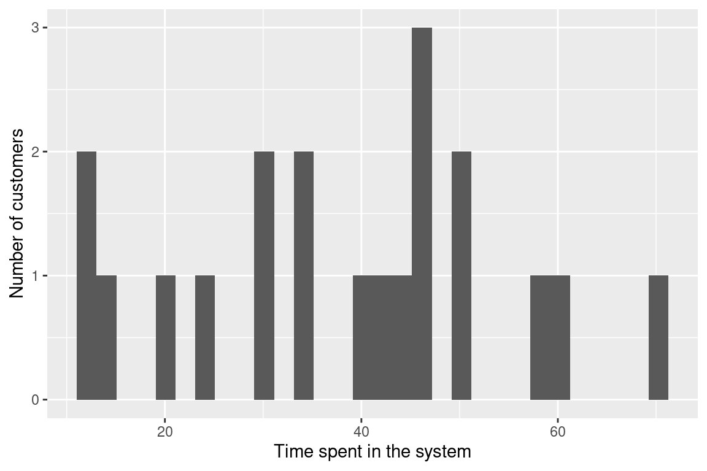
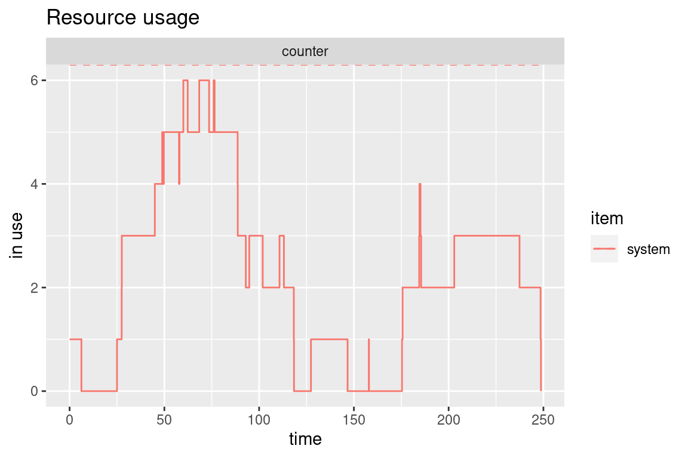

vignettes/simmer-04-bank-2.Rmd
simmer-04-bank-2.RmdThis tutorial is adapted from a tutorial for the Python 2 package ‘SimPy’, here. Users familiar with SimPy may find this tutorial helpful for transitioning to simmer. Some very basic material is not covered. Beginners should first read The Bank Tutorial: Part I.
In many situations there is a system of priority service. Those customers with high priority are served first, those with low priority must wait. In some cases, preemptive priority will even allow a high-priority customer to interrupt the service of one with a lower priority.
Simmer implements priority requests with an extra integer priority argument to add_generator(). By default, priority is zero; higher integers have higher priority. For this to operate, the resource must have been created with preemptive = TRUE.
In the first example, we modify the program with random arrivals, one counter, and a fixed service time (like One Service counter in The Bank Tutorial: Part I) to process a high priority customer.
Here, we give each customer a priority. Since the default is priority = 0 this is easy for most of them.
To observe the priority in action, while all other customers have the default priority of 0, we create and activate one special customer, Guido, with priority 1 who arrives at time 23. This is to ensure that he arrives after Customer2.
Since the activity trace does not produce the waiting time by default, this is calculated and appended using the transform function.
library(simmer)
set.seed(1933)
bank <- simmer()
customer <-
trajectory("Customer's path") %>%
set_attribute("start_time", function() {now(bank)}) %>%
log_(function() {
paste("Queue is", get_queue_count(bank, "counter"), "on arrival")
}) %>%
seize("counter") %>%
log_(function() {paste("Waited", now(bank) - get_attribute(bank, "start_time"))}) %>%
timeout(12) %>%
release("counter") %>%
log_("Completed")
bank <-
simmer("bank") %>%
add_resource("counter") %>%
add_generator("Customer", customer, function() {c(0, rexp(4, 1/10), -1)}) %>%
add_generator("Guido", customer, at(23), priority = 1)
bank %>% run(until = 400)
#> 0: Customer0: Queue is 0 on arrival
#> 0: Customer0: Waited 0
#> 0.177365: Customer1: Queue is 0 on arrival
#> 8.64106: Customer2: Queue is 1 on arrival
#> 12: Customer0: Completed
#> 12: Customer1: Waited 11.8226352687925
#> 21.1346: Customer3: Queue is 1 on arrival
#> 23: Guido0: Queue is 2 on arrival
#> 24: Customer1: Completed
#> 24: Guido0: Waited 1
#> 28.0923: Customer4: Queue is 2 on arrival
#> 36: Guido0: Completed
#> 36: Customer2: Waited 27.3589401547341
#> 48: Customer2: Completed
#> 48: Customer3: Waited 26.8654149797765
#> 60: Customer3: Completed
#> 60: Customer4: Waited 31.9076510670601
#> 72: Customer4: Completed
#> simmer environment: bank | now: 72 | next:
#> { Monitor: in memory }
#> { Resource: counter | monitored: TRUE | server status: 0(1) | queue status: 0(Inf) }
#> { Source: Customer | monitored: 1 | n_generated: 5 }
#> { Source: Guido | monitored: 1 | n_generated: 1 }
bank %>%
get_mon_arrivals() %>%
transform(waiting_time = end_time - start_time - activity_time)
#> name start_time end_time activity_time finished replication
#> 1 Customer0 0.0000000 12 12 TRUE 1
#> 2 Customer1 0.1773647 24 12 TRUE 1
#> 3 Guido0 23.0000000 36 12 TRUE 1
#> 4 Customer2 8.6410598 48 12 TRUE 1
#> 5 Customer3 21.1345850 60 12 TRUE 1
#> 6 Customer4 28.0923489 72 12 TRUE 1
#> waiting_time
#> 1 0.00000
#> 2 11.82264
#> 3 1.00000
#> 4 27.35894
#> 5 26.86541
#> 6 31.90765The output above displays the number of customers in the queue just as each one arrives. That count does not include any customer in service.
Reading carefully one can see that when Guido arrives Customer0 has been served and left at 12, Customer1 is in service and two (customers 2 and 3) are queueing. Guido has priority over those waiting and is served before them at 24. When Guido leaves at 36, Customer2 starts service.
Now we allow Guido to have preemptive priority. He will displace any customer in service when he arrives. That customer will resume when Guido finishes (unless higher priority customers intervene). It requires only a change to one line of the program, adding the argument, preemptive = TRUE to the add_resource function call.
library(simmer)
set.seed(1933)
bank <- simmer()
customer <-
trajectory("Customer's path") %>%
set_attribute("start_time", function() {now(bank)}) %>%
log_(function() {
paste("Queue is", get_queue_count(bank, "counter"), "on arrival")
}) %>%
seize("counter") %>%
log_(function() {paste("Waited", now(bank) - get_attribute(bank, "start_time"))}) %>%
timeout(12) %>%
release("counter") %>%
log_("Completed")
bank <-
simmer("bank") %>%
add_resource("counter", preemptive = TRUE) %>%
add_generator("Customer", customer, function() {c(0, rexp(4, 1/10), -1)}) %>%
add_generator("Guido", customer, at(23), priority = 1)
bank %>% run(until = 400)
#> 0: Customer0: Queue is 0 on arrival
#> 0: Customer0: Waited 0
#> 0.177365: Customer1: Queue is 0 on arrival
#> 8.64106: Customer2: Queue is 1 on arrival
#> 12: Customer0: Completed
#> 12: Customer1: Waited 11.8226352687925
#> 21.1346: Customer3: Queue is 1 on arrival
#> 23: Guido0: Queue is 2 on arrival
#> 23: Guido0: Waited 0
#> 28.0923: Customer4: Queue is 3 on arrival
#> 35: Guido0: Completed
#> 36: Customer1: Completed
#> 36: Customer2: Waited 27.3589401547341
#> 48: Customer2: Completed
#> 48: Customer3: Waited 26.8654149797765
#> 60: Customer3: Completed
#> 60: Customer4: Waited 31.9076510670601
#> 72: Customer4: Completed
#> simmer environment: bank | now: 72 | next:
#> { Monitor: in memory }
#> { Resource: counter | monitored: TRUE | server status: 0(1) | queue status: 0(Inf) }
#> { Source: Customer | monitored: 1 | n_generated: 5 }
#> { Source: Guido | monitored: 1 | n_generated: 1 }
bank %>%
get_mon_arrivals() %>%
transform(waiting_time = end_time - start_time - activity_time)
#> name start_time end_time activity_time finished replication
#> 1 Customer0 0.0000000 12 12 TRUE 1
#> 2 Guido0 23.0000000 35 12 TRUE 1
#> 3 Customer1 0.1773647 36 12 TRUE 1
#> 4 Customer2 8.6410598 48 12 TRUE 1
#> 5 Customer3 21.1345850 60 12 TRUE 1
#> 6 Customer4 28.0923489 72 12 TRUE 1
#> waiting_time
#> 1 0.00000
#> 2 0.00000
#> 3 23.82264
#> 4 27.35894
#> 5 26.86541
#> 6 31.90765Though Guido arrives at the same time, 23, he no longer has to wait and immediately goes into service, displacing the incumbent, Customer1. That customer had already completed 23 - 12 = 11 minutes of his service. When Guido finishes at 35, Customer1 resumes service and takes 36 - 35 = 1 minutes to finish. His total service time is the same as before (12 minutes).
Balking occurs when a customer refuses to join a queue if it is too long. Reneging (or, better, abandonment) occurs if an impatient customer gives up while still waiting and before being served.
Another term for a system with balking customers is one where “blocked customers” are “cleared”, termed by engineers a BCC system. This is very convenient analytically in queueing theory and formulae developed using this assumption are used extensively for planning communication systems. The easiest case is when no queueing is allowed.
As an example let us investigate a BCC system with a single server but the waiting space is limited. We will estimate the rate of balking when the maximum number in the queue is set to 1. On arrival into the system the customer must first check to see if there is room. If there is not enough room, the customer balks.
To get the balking rate, we first count the number of arrivals that didn’t finish, using the data given by get_mon_arrivals(). Then we divide it by the current model time from now(bank).
library(simmer)
timeInBank <- 12 # mean, minutes
ARRint <- 10 # mean, minutes
numServers <- 1 # servers
maxInSystem <- 2 # customers
maxInQueue <- maxInSystem - numServers
maxNumber <- 8
maxTime <- 400 # minutes
set.seed(59098)
bank <- simmer()
customer <-
trajectory("Customer's path") %>%
log_("Here I am") %>%
set_attribute("start_time", function() {now(bank)}) %>%
seize("counter",
continue = FALSE,
reject =
trajectory("Balked customer") %>%
log_("BALKING")) %>%
log_(function() {paste("Waited", now(bank) - get_attribute(bank, "start_time"))}) %>%
timeout(function() {rexp(1, 1/timeInBank)}) %>%
release("counter") %>%
log_("Finished")
bank <-
simmer("bank") %>%
add_resource("counter",
capacity = numServers,
queue_size = maxInQueue) %>%
add_generator("Customer",
customer,
at(c(0, cumsum(rexp(maxNumber - 1, 1 / ARRint)))))
bank %>% run(until = maxTime)
#> 0: Customer0: Here I am
#> 0: Customer0: Waited 0
#> 0.822239: Customer1: Here I am
#> 1.01227: Customer2: Here I am
#> 1.01227: Customer2: BALKING
#> 4.7448: Customer3: Here I am
#> 4.7448: Customer3: BALKING
#> 20.5472: Customer4: Here I am
#> 20.5472: Customer4: BALKING
#> 21.6132: Customer5: Here I am
#> 21.6132: Customer5: BALKING
#> 22.7358: Customer0: Finished
#> 22.7358: Customer1: Waited 21.9136007670654
#> 23.5339: Customer6: Here I am
#> 32.1107: Customer7: Here I am
#> 32.1107: Customer7: BALKING
#> 52.5108: Customer1: Finished
#> 52.5108: Customer6: Waited 28.9769820388615
#> 55.8923: Customer6: Finished
#> simmer environment: bank | now: 55.8923309646971 | next:
#> { Monitor: in memory }
#> { Resource: counter | monitored: TRUE | server status: 0(1) | queue status: 0(1) }
#> { Source: Customer | monitored: 1 | n_generated: 8 }
number_balked <- sum(!get_mon_arrivals(bank)$finished)
paste("Balking rate is", number_balked / now(bank), "customers per minute.")
#> [1] "Balking rate is 0 customers per minute."When Customer2 arrives, Customer0 is already in service and Customer1 is waiting. There is no room, so Customer2 balks. By the vagaries of exponential random numbers, Customer0 takes a very long time to serve (22.7358 minutes) so the first one to find room is number Customer6 at 25.5339.
Often in practice an impatient customer will leave the queue before being served. Simmer can model this reneging behaviour using the renege_in() function in a trajectory. This defines the maximum time that a customer will wait before reneging, as well as an ‘out’ trajectory for them to follow when they renege.
If the customer reaches the server before reneging, then their impatience must be cancelled with the renege_abort() function.
library(simmer)
timeInBank <- 15 # mean, minutes
ARRint <- 10 # mean, minutes
numServers <- 1 # servers
maxNumber <- 5
maxTime <- 400 # minutes
maxWaitTime <- 12 # minutes, maximum time to wait before reneging
set.seed(59030)
bank <- simmer()
customer <-
trajectory("Customer's path") %>%
log_("Here I am") %>%
set_attribute("start_time", function() {now(bank)}) %>%
renege_in(maxWaitTime,
out = trajectory("Reneging customer") %>%
log_(function() {
paste("Waited", now(bank) - get_attribute(bank, "start_time"), "I am off")
})) %>%
seize("counter") %>%
renege_abort() %>% # Stay if I'm being attended within maxWaitTime
log_(function() {paste("Waited", now(bank) - get_attribute(bank, "start_time"))}) %>%
timeout(function() {rexp(1, 1/timeInBank)}) %>%
release("counter") %>%
log_("Completed")
bank <-
simmer("bank") %>%
add_resource("counter",
capacity = numServers) %>%
add_generator("Customer",
customer,
at(c(0, cumsum(rexp(maxNumber - 1, 1 / ARRint)))))
bank %>% run(until = maxTime)
#> 0: Customer0: Here I am
#> 0: Customer0: Waited 0
#> 16.5058: Customer1: Here I am
#> 28.5058: Customer1: Waited 12 I am off
#> 34.339: Customer2: Here I am
#> 41.8687: Customer3: Here I am
#> 46.339: Customer2: Waited 12 I am off
#> 49.3671: Customer4: Here I am
#> 53.8687: Customer3: Waited 12 I am off
#> 54.7374: Customer0: Completed
#> 54.7374: Customer4: Waited 5.37030150208617
#> 64.6857: Customer4: Completed
#> simmer environment: bank | now: 64.6856688172597 | next:
#> { Monitor: in memory }
#> { Resource: counter | monitored: TRUE | server status: 0(1) | queue status: 0(Inf) }
#> { Source: Customer | monitored: 1 | n_generated: 5 }Customer1 arrives after Customer0 but has only 12 minutes patience. After that time in the queue (at time 28.5058) he abandons the queue to leave Customer2 to take his place. Customer2 and Customer3 also renege. Customer4 is served within 12 minutes.
Klaus goes into the bank to talk to the manager. For clarity we ignore the counters and other customers. During his conversation his cellphone rings. When he finishes the call he continues the conversation.
In this example, the call is another trajectory, whose only activities are to send a signal (the ringing of the phone), and to write that event to the log.
In Klaus’ trajectory, the trap activity causes him to listen for the phone to ring. Supposing the phone doesn’t ring, then his trajectory would continue to the timeout activity, where he would do his banking business for 20 minutes, and then finish.
Supposing the phone does ring, then Klaus would enter the sub-trajectory defined within the trap function as a ‘handler’. In that trajectory, he makes his excuses, answers the phone, then returns to business. At the end of the trajectory, he continues the original trajectory at the next step following the original timeout, without spending the rest of the 20 minutes on his banking.
To make Klaus spend a full 20 minutes banking, we add a timeout activity to the end of the ‘handler’, but first we have to calculate how much time remains after the interruption. This is done by storing the ‘start’ time in an attribute, and calculating how much time is left when the phone rings.
By default, interruptions can themselves be interrupted, as illustrated in this example by the phone ringing twice. This could be avoided by setting interruptible = FALSE in the trap activity.
library(simmer)
timeInBank <- 20
timeOfCall <- 9
onphone <- 3
maxTime <- 100
bank <- simmer()
customer <-
trajectory("Customer's path") %>%
trap("phonecall",
handler = trajectory() %>%
log_("Excuse me") %>%
set_attribute(
"timeleft", function() {
sum(get_attribute(bank, c("timeleft", "start"))) - now(bank)
}) %>%
log_("Hello! I'll call back") %>%
timeout(onphone) %>%
log_("Sorry, where were we?") %>%
set_attribute("start", function() {now(bank)}) %>%
log_(function() {paste("Time left:", get_attribute(bank, "timeleft"))}) %>%
timeout_from_attribute("timeleft")
) %>%
log_("Here I am") %>%
set_attribute("timeleft", timeInBank) %>%
set_attribute("start", function() {now(bank)}) %>%
timeout(timeInBank) %>%
log_("Completed")
phone <-
trajectory("Phone") %>%
log_("Ringgg!") %>%
send("phonecall")
bank <-
simmer("bank") %>%
add_generator("Klaus", customer, at(0)) %>%
add_generator("Phone", phone, at(timeOfCall, timeOfCall + 7))
bank %>% run(until = maxTime)
#> 0: Klaus0: Here I am
#> 9: Phone0: Ringgg!
#> 9: Klaus0: Excuse me
#> 9: Klaus0: Hello! I'll call back
#> 12: Klaus0: Sorry, where were we?
#> 12: Klaus0: Time left: 11
#> 16: Phone1: Ringgg!
#> 16: Klaus0: Excuse me
#> 16: Klaus0: Hello! I'll call back
#> 19: Klaus0: Sorry, where were we?
#> 19: Klaus0: Time left: 7
#> 26: Klaus0: Completed
#> simmer environment: bank | now: 26 | next:
#> { Monitor: in memory }
#> { Source: Klaus | monitored: 1 | n_generated: 1 }
#> { Source: Phone | monitored: 1 | n_generated: 2 }As this has no random numbers the results are reasonably clear: the first interrupting call occurs at 9. It takes Klaus 3 minutes to listen to the message and he resumes the conversation with the bank manager at 12. The phone rings again at 16, he listens for three more minutes, and resumes the conversation at 19, finally finishing at 26. The total time of conversation is 9 + 4 + 7 = 20 minutes, the same as it would have been if the interrupt had not occurred.
Customers arrive at random, some of them getting to the bank before the door is opened by a doorman. They wait for the door to be opened and then rush in and queue to be served.
This model defines the door as a resource, just like the counter. The capacity of the door is defined according to the schedule function, so that it has zero capacity when it is shut, and infinite capacity when it is open. Customers ‘seize’ the door and must then wait until it has capacity to ‘serve’ them. Once it is available, all waiting customers are ‘served’ immediately (i.e. they pass through the door). There is no timeout between ‘seizing’ and ‘releasing’ the door.
For the sake of announcing in the log that the door has been opened, a doorman trajectory is defined.
library(simmer)
maxTime = 400
set.seed(393937)
bank <- simmer()
customer <-
trajectory("Customer's path") %>%
log_(function()
if (get_capacity(bank, "door") == 0)
"Here I am but the door is shut."
else "Here I am and the door is open."
) %>%
seize("door") %>%
log_("I can go in!") %>%
release("door") %>%
seize("counter") %>%
timeout(function() {rexp(1, 1/10)}) %>%
release("counter")
openTime <- rexp(1, 1/10)
door_schedule <- schedule(c(0, openTime), c(0, Inf))
doorman <-
trajectory() %>%
timeout(openTime) %>%
log_("Ladies and Gentlemen! You may all enter.")
bank <-
simmer("bank") %>%
add_resource("door", capacity = door_schedule) %>%
add_resource("counter") %>%
add_generator("Customer",
customer,
at(c(0, cumsum(rexp(5 - 1, 0.1))))) %>%
add_generator("Doorman", doorman, at(0))
bank %>% run(until = maxTime)
#> 0: Customer0: Here I am but the door is shut.
#> 6.44076: Customer1: Here I am but the door is shut.
#> 8.77564: Customer2: Here I am but the door is shut.
#> 19.7241: Doorman0: Ladies and Gentlemen! You may all enter.
#> 19.7241: Customer0: I can go in!
#> 19.7241: Customer1: I can go in!
#> 19.7241: Customer2: I can go in!
#> 24.2037: Customer3: Here I am and the door is open.
#> 24.2037: Customer3: I can go in!
#> 33.3576: Customer4: Here I am and the door is open.
#> 33.3576: Customer4: I can go in!
#> simmer environment: bank | now: 79.2542060826083 | next:
#> { Monitor: in memory }
#> { Resource: door | monitored: TRUE | server status: 0(Inf) | queue status: 0(Inf) }
#> { Resource: counter | monitored: TRUE | server status: 0(1) | queue status: 0(Inf) }
#> { Source: Customer | monitored: 1 | n_generated: 5 }
#> { Source: Doorman | monitored: 1 | n_generated: 1 }
bank %>%
get_mon_arrivals() %>%
transform(waiting_time = end_time - start_time - activity_time)
#> name start_time end_time activity_time finished replication
#> 1 Doorman0 0.000000 19.72408 19.724085 TRUE 1
#> 2 Customer0 0.000000 46.61084 26.886751 TRUE 1
#> 3 Customer1 6.440758 64.20811 17.597279 TRUE 1
#> 4 Customer2 8.775635 71.50006 7.291950 TRUE 1
#> 5 Customer3 24.203687 73.96270 2.462632 TRUE 1
#> 6 Customer4 33.357600 79.25421 5.291510 TRUE 1
#> waiting_time
#> 1 0.00000
#> 2 19.72408
#> 3 40.17008
#> 4 55.43248
#> 5 47.29638
#> 6 40.60510The output above programs shows how the first two customers have to wait until the door is opened.
Customers arrive at random, some of them getting to the bank before the door is open. This is controlled by an automatic machine called the doorman which opens the door only at intervals of 30 minutes (it is a very secure bank). The customers wait for the door to be opened and all those waiting enter and proceed to the counter. The door is closed behind them.
There are at least two ways to implement this model. The first example uses a schedule, and the second uses batching.
The principle behind the schedule is that the door is modelled as a server with zero capacity for 30 minutes, then infinite capacity for zero minutes, then repeat the 30-minute cycle. In the moment that it has infinite capacity, all the customers will pass through the door (i.e. they will be ‘served’).
For the sake of announcing in the log that the door has been opened, a doorman trajectory is defined. The doorman has a rollback step so that it keeps opening and shutting the door every 30 minutes for ever.
library(simmer)
maxTime = 150
customer <-
trajectory("Customer's path") %>%
log_("Here I am, but the door is shut.") %>%
set_attribute("start_time", function() {now(bank)}) %>%
seize("door") %>%
log_("The door is open!") %>%
log_(function() {paste("Waited", now(bank) - get_attribute(bank, "start_time"))}) %>%
release("door") %>%
seize("counter") %>%
timeout(function() {rexp(1, 1/10)}) %>%
release("counter") %>%
log_("Finished.")
door_schedule <- schedule(c(30, 30), c(Inf, 0), period = 30)
doorman <-
trajectory("Doorman") %>%
timeout(30) %>%
log_("You may enter.") %>%
rollback(2, times = Inf)
set.seed(393939)
bank <- simmer("bank")
bank %>%
add_resource("door", capacity = door_schedule) %>%
add_resource("counter") %>%
add_generator("Customer",
customer,
at(c(0, cumsum(rexp(5 - 1, 0.1))))) %>%
add_generator("Doorman", doorman, at(0))
#> simmer environment: bank | now: 0 | next: 0
#> { Monitor: in memory }
#> { Resource: door | monitored: TRUE | server status: 0(0) | queue status: 0(Inf) }
#> { Resource: counter | monitored: TRUE | server status: 0(1) | queue status: 0(Inf) }
#> { Source: Customer | monitored: 1 | n_generated: 0 }
#> { Source: Doorman | monitored: 1 | n_generated: 0 }
bank %>% run(until = maxTime)
#> 0: Customer0: Here I am, but the door is shut.
#> 25.4605: Customer1: Here I am, but the door is shut.
#> 30: Doorman0: You may enter.
#> 30: Customer0: The door is open!
#> 30: Customer0: Waited 30
#> 30: Customer1: The door is open!
#> 30: Customer1: Waited 4.53951782839885
#> 35.4334: Customer2: Here I am, but the door is shut.
#> 36.0565: Customer0: Finished.
#> 40.6413: Customer3: Here I am, but the door is shut.
#> 48.7442: Customer1: Finished.
#> 49.063: Customer4: Here I am, but the door is shut.
#> 60: Doorman0: You may enter.
#> 60: Customer2: The door is open!
#> 60: Customer2: Waited 24.566617201638
#> 60: Customer3: The door is open!
#> 60: Customer3: Waited 19.3586741095377
#> 60: Customer4: The door is open!
#> 60: Customer4: Waited 10.9369934153668
#> 66.7763: Customer2: Finished.
#> 71.3982: Customer3: Finished.
#> 79.5795: Customer4: Finished.
#> 90: Doorman0: You may enter.
#> 120: Doorman0: You may enter.
#> simmer environment: bank | now: 150 | next: 150
#> { Monitor: in memory }
#> { Resource: door | monitored: TRUE | server status: 0(0) | queue status: 0(Inf) }
#> { Resource: counter | monitored: TRUE | server status: 0(1) | queue status: 0(Inf) }
#> { Source: Customer | monitored: 1 | n_generated: 5 }
#> { Source: Doorman | monitored: 1 | n_generated: 1 }
bank %>%
get_mon_arrivals() %>%
transform(waiting_time = end_time - start_time - activity_time)
#> name start_time end_time activity_time finished replication
#> 1 Customer0 0.00000 36.05646 6.056458 TRUE 1
#> 2 Customer1 25.46048 48.74417 12.687713 TRUE 1
#> 3 Customer2 35.43338 66.77625 6.776253 TRUE 1
#> 4 Customer3 40.64133 71.39816 4.621910 TRUE 1
#> 5 Customer4 49.06301 79.57954 8.181380 TRUE 1
#> waiting_time
#> 1 30.00000
#> 2 10.59598
#> 3 24.56662
#> 4 26.13493
#> 5 22.33516The output run for this program shows how the first two customers have to wait until the door is opened, and then the next three have to wait.
The second method is batching. Customers can be collected into batches of a given size, or for a given time, or whichever occurs first. Here, they are collected for periods of 30, and the number of customers in each batch is unrestricted.
After the batch is created with batch, usually the customers will all be processed together by a server, before separating with separate. In this example, there is no need for a server – the door is modelled by the batch itself – so the customers are separated immediately after the batch.
library(simmer)
maxTime = 150
customer <-
trajectory("Customer's path") %>%
log_("Here I am, but the door is shut.") %>%
set_attribute("start_time", function() {now(bank)}) %>%
batch(n = Inf, timeout = 30) %>%
separate() %>%
log_("The door is open!") %>%
log_(function() {paste("Waited", now(bank) - get_attribute(bank, "start_time"))}) %>%
seize("counter") %>%
timeout(function() {rexp(1, 1/10)}) %>%
release("counter") %>%
log_("Finished.")
doorman <-
trajectory("Doorman") %>%
timeout(30) %>%
log_("You may enter.") %>%
rollback(2, times = Inf)
set.seed(393939)
bank <- simmer("bank")
bank %>%
add_resource("door") %>%
add_resource("counter") %>%
add_generator("Customer",
customer,
at(c(0, cumsum(rexp(5 - 1, 0.1))))) %>%
add_generator("Doorman", doorman, at(0))
#> simmer environment: bank | now: 0 | next: 0
#> { Monitor: in memory }
#> { Resource: door | monitored: TRUE | server status: 0(1) | queue status: 0(Inf) }
#> { Resource: counter | monitored: TRUE | server status: 0(1) | queue status: 0(Inf) }
#> { Source: Customer | monitored: 1 | n_generated: 0 }
#> { Source: Doorman | monitored: 1 | n_generated: 0 }
bank %>% run(until = maxTime)
#> 0: Customer0: Here I am, but the door is shut.
#> 25.4605: Customer1: Here I am, but the door is shut.
#> 30: Doorman0: You may enter.
#> 30: Customer0: The door is open!
#> 30: Customer0: Waited 30
#> 30: Customer1: The door is open!
#> 30: Customer1: Waited 4.53951782839885
#> 35.4334: Customer2: Here I am, but the door is shut.
#> 36.0565: Customer0: Finished.
#> 40.6413: Customer3: Here I am, but the door is shut.
#> 48.7442: Customer1: Finished.
#> 49.063: Customer4: Here I am, but the door is shut.
#> 60: Doorman0: You may enter.
#> 60: Customer2: The door is open!
#> 60: Customer2: Waited 24.566617201638
#> 60: Customer3: The door is open!
#> 60: Customer3: Waited 19.3586741095377
#> 60: Customer4: The door is open!
#> 60: Customer4: Waited 10.9369934153668
#> 66.7763: Customer2: Finished.
#> 71.3982: Customer3: Finished.
#> 79.5795: Customer4: Finished.
#> 90: Doorman0: You may enter.
#> 120: Doorman0: You may enter.
#> simmer environment: bank | now: 150 | next: 150
#> { Monitor: in memory }
#> { Resource: door | monitored: TRUE | server status: 0(1) | queue status: 0(Inf) }
#> { Resource: counter | monitored: TRUE | server status: 0(1) | queue status: 0(Inf) }
#> { Source: Customer | monitored: 1 | n_generated: 5 }
#> { Source: Doorman | monitored: 1 | n_generated: 1 }
bank %>%
get_mon_arrivals() %>%
transform(waiting_time = end_time - start_time - activity_time)
#> name start_time end_time activity_time finished replication
#> 1 Customer0 0.00000 36.05646 6.056458 TRUE 1
#> 2 Customer1 25.46048 48.74417 12.687713 TRUE 1
#> 3 Customer2 35.43338 66.77625 6.776253 TRUE 1
#> 4 Customer3 40.64133 71.39816 4.621910 TRUE 1
#> 5 Customer4 49.06301 79.57954 8.181380 TRUE 1
#> waiting_time
#> 1 30.00000
#> 2 10.59598
#> 3 24.56662
#> 4 26.13493
#> 5 22.33516This second method gives the same output as the first.
Monitors record events in a simulation. Unlike SimPy, Simmer does this by default, so the records are available after – in fact, even during – a simulation. Data that is collected by monitors is available from the following functions:
get_capacity
get_mon_arrivals
get_mon_attributes
get_mon_resources
get_n_activities
get_n_generated
get_queue_count
get_queue_size
get_server_countThe get_mon_*() functions return a data frame (which is growing during the simulation, so that, although possible, it is computationally expensive to call them from inside a trajectory). The others return a numeric value.
A histogram of the amount of time that customers spend in the bank can be plotted by taking some basic information – start and end time of each customer – from the get_mon_arrivals() function, and then calculating the elapsed time. This example draws the plot with the ggplot2 package, but other plotting packages, and base R graphics, could do something similar.
library(simmer)
library(simmer.plot)
#> Loading required package: ggplot2
#>
#> Attaching package: 'simmer.plot'
#> The following objects are masked from 'package:simmer':
#>
#> get_mon_arrivals, get_mon_attributes, get_mon_resources
# library(ggplot2) # (automatically loaded with simmer.plot)
bank <- simmer()
customer <-
trajectory("Customer's path") %>%
seize("counter") %>%
timeout(12) %>%
release("counter")
set.seed(393939)
bank <-
simmer("bank") %>%
add_resource("counter") %>%
add_generator("Customer",
customer,
at(c(0, cumsum(rexp(20 - 1, 0.1)))))
bank %>% run(400)
#> simmer environment: bank | now: 253.460482171601 | next:
#> { Monitor: in memory }
#> { Resource: counter | monitored: TRUE | server status: 0(1) | queue status: 0(Inf) }
#> { Source: Customer | monitored: 1 | n_generated: 20 }
bank %>%
get_mon_arrivals %>%
ggplot(aes(end_time - start_time)) +
geom_histogram() +
xlab("Time spent in the system") +
ylab("Number of customers")
#> `stat_bin()` using `bins = 30`. Pick better value with `binwidth`.
Now consider observing the number of customers waiting or active in a Resource.
get_mon_resources() returns a table of states and times for the counter. Whenever a customer enters/leaves a queue/counter, a new row is created recording the number of customers in the queue, the counter and the system as a whole. We call this the ‘state’. The amount of time that the state lasts is the difference in time between one state and the next, which we calculate with the diff() function. Finally, we multiply the number of customers in each state by the duration of the state, and divide by the duration of the simulation (the time at the end) to get the average.
library(simmer)
set.seed(1234)
bank <- simmer()
customer <-
trajectory("Customer's path") %>%
log_("Arrived") %>%
set_attribute("start_time", function() {now(bank)}) %>%
seize("counter") %>%
log_("Got counter") %>%
log_(function() {paste("Waited", now(bank) - get_attribute(bank, "start_time"))}) %>%
timeout(12) %>%
release("counter") %>%
log_("Finished")
bank <-
simmer("bank") %>%
add_resource("counter") %>%
add_generator("Customer", customer, function() {c(0, rexp(4, 1/10), -1)})
bank %>% run(until = 400)
#> 0: Customer0: Arrived
#> 0: Customer0: Got counter
#> 0: Customer0: Waited 0
#> 12: Customer0: Finished
#> 25.0176: Customer1: Arrived
#> 25.0176: Customer1: Got counter
#> 25.0176: Customer1: Waited 0
#> 27.4852: Customer2: Arrived
#> 27.551: Customer3: Arrived
#> 37.0176: Customer1: Finished
#> 37.0176: Customer2: Got counter
#> 37.0176: Customer2: Waited 9.53241116646677
#> 44.9785: Customer4: Arrived
#> 49.0176: Customer2: Finished
#> 49.0176: Customer3: Got counter
#> 49.0176: Customer3: Waited 21.466591599012
#> 61.0176: Customer3: Finished
#> 61.0176: Customer4: Got counter
#> 61.0176: Customer4: Waited 16.0391307005949
#> 73.0176: Customer4: Finished
#> simmer environment: bank | now: 73.0175860496223 | next:
#> { Monitor: in memory }
#> { Resource: counter | monitored: TRUE | server status: 0(1) | queue status: 0(Inf) }
#> { Source: Customer | monitored: 1 | n_generated: 5 }
customer_monitor <-
get_mon_arrivals(bank) %>%
transform(wait = end_time - start_time - activity_time)
mean_waiting_time <- mean(customer_monitor$wait)
resource_monitor <- get_mon_resources(bank)
queue_state <- head(resource_monitor$queue, -1)
server_state <- head(resource_monitor$server, -1)
time_state_lasted <- diff(resource_monitor$time)
time_at_end <- max(resource_monitor$time)
mean_active_customers <- sum(server_state * time_state_lasted) / time_at_end
mean_waiting_customers <- sum(queue_state * time_state_lasted) / time_at_end
cat(" Average waiting = ", mean_waiting_customers, "\n",
"Average active = ", mean_active_customers, "\n")
#> Average waiting = 0.6442028
#> Average active = 0.8217199All the get_mon_*() return information that enables us to graph the output. Alternative plotting packages can be used; here we use the simmer.plot package just to graph the number of customers waiting for the counter.
The simmer.plot package is imported at line 2. The function get_mon_resources() is not called because the function plot() calles get_mon_resources() itself. The plot() function has arguments to specifiy what to plot.
library(simmer)
library(simmer.plot)
timeInBank <- 12 # mean, minutes
set.seed(1234)
bank <- simmer()
customer <-
trajectory("Customer's path") %>%
set_attribute("start_time", function() {now(bank)}) %>%
seize("counter") %>%
timeout(function() {rexp(1, 1/timeInBank)}) %>%
release("counter")
bank <-
simmer("bank") %>%
add_resource("counter") %>%
add_generator("Customer", customer, function() {c(0, rexp(19, 1/10), -1)})
bank %>% run(until = 400)
#> simmer environment: bank | now: 248.706140163915 | next:
#> { Monitor: in memory }
#> { Resource: counter | monitored: TRUE | server status: 0(1) | queue status: 0(Inf) }
#> { Source: Customer | monitored: 1 | n_generated: 20 }
plot(bank,
what = "resources",
metric = "usage",
names = "counter",
items = "system",
steps = TRUE)
#> Warning: 'plot.simmer' is deprecated.
#> Use 'plot(get_mon_resources(x))' instead.
#> See help("Deprecated")